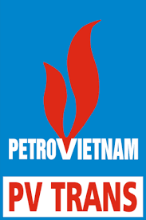
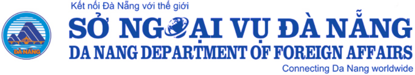

HARVEY LE
A "jack of all trades" Entrepreuner

SUMMARY
Experienced IT Manager, CIO, CTO, and HR-Admin Manager with a Bachelor of
International Economics and a Master of IT Management. Over 20 years in
various managerial positions, with a proven track record of success in BOD
consultation, department operations, project/strategic implementation,
team building, and collaboration.
Currently serving as the Director/COO/CTO of DienChan Care Inc., with
previous experience as the HR-Admin Manager of Thang Long Maritime, IT
Manager at PetroVietnam Transportation Corporation, and 6 years at the
Foreign Affairs Department of Danang City. Strong analytical thinking,
dynamic skills, and a wide range of experience in Applied IT, HR, and
Administration. Fluent in English, Vietnamese, and French (basic).
Passionate about self-learning and constantly acquiring new skills and
knowledge. Hobbies include reading, football, photography, and traveling.
EDUCATION
-
Master of IT Management (E-Management)
Innotech Institute & CBAM, 2006 - 2007
-
Bachelor of International Economics
Diplomatic Academy of Vietnam, 1997 - 2001
WORK EXPERIENCE
-
Co-founder/Director/COO, DienChan Care Inc., April 13 2023 - Present.

-
Oversee general management, technology and product development,
human resources, sales, and marketing for a growing healthcare
company.
-
Design, plan, and implement business strategies, plans, and
procedures to ensure continued growth and success.
-
Set comprehensive goals for business growth and success, and develop
strategies to achieve them.
-
Establish policies and procedures that promote company culture and
vision, and ensure compliance with regulations.
-
Analyze and interpret data and metrics to make informed business
decisions.
-
Create reports for management to track progress and identify areas
for improvement.
-
Maintain strong relationships with partners and vendors to ensure
smooth operations and growth.
-
HR & Admin Manager, Thang Long Maritime J.S.C. 2020 - 2023.
-
In charge of entire HR & Admin Division operations, including duties
as an IT Manager.
-
Built and maintained the company's applied IT system to improve
efficiency and productivity.
-
Managed daily operations of the IT function and provided support to
employees on technical issues.
-
Developed and implemented policies and procedures to ensure compliance
and promote company culture.
-
Conducted training and development programs for employees to enhance
their skills and productivity.
-
Oversaw recruitment, onboarding, and performance evaluation processes.
-
Maintained relationships with external partners and vendors to support
business operations.
-
IT Manager, Deputy Head of Administration Department, PetroVietnam
Transportation Corporation, 2007 - 2020.

-
Built up, maintained and developed entire PVTrans' IT and
communication system.
-
Oversaw the operations of the IT Division and provided support to
employees on technical issues.
-
Managed the company's IT budget and ensured cost-effective
solutions.
-
Collaborated with other departments to identify and address IT
needs.
-
Conducted training and development programs for employees to enhance
their technical skills.
-
Maintained relationships with external partners and vendors to
support business operations.
-
Foreign Affairs Officer, Foreign Affairs Department of Danang City,
2001 - 2007

-
Participated in various foreign affairs, protocol, and external
dissemination activities.
-
Assisted in planning and organizing events and meetings with foreign
delegations.
-
Conducted research and analysis on international relations and
policies.
-
Coordinated with other departments to facilitate foreign
delegations' visits.
-
Assisted in drafting and translating official documents and
speeches.
-
Maintained relationships with foreign partners to promote
cooperation and exchange.
SKILLS
-
Management skills: BOD consultation, team building, project management,
strategic implementation, and collaboration.
-
IT skills: IT management, system and network administration, problem
solving, business analysis, and digital transformation.
-
HR and administrative skills: Recruitment, performance evaluation,
policy development, training and development, and vendor management.
-
Analytical thinking: Ability to analyze and interpret data and metrics
to make informed business decisions.
-
Communication and interpersonal skills: Maintaining relationships with
partners and vendors, and promoting company culture and vision.
- Languages: Fluent in English, Vietnamese, and French (basic).
AWARDS, CERTIFICATIONS, OR OTHER ACHIEVEMENTS:
- IT Manager Certificate from Infochief Institute, HCMC (2010).
-
Computer Network Security Assessment Certificate from Information
Technology Park, Vietnam National University HCMC (2011).
-
Computer and Computer Network Security Certificate from The People's
Security Academy (C500) (2014).
-
Leadership and Management Skills Program Certificate, issued by Dale
Carnegie Training (2008).
-
Internal Quality Auditor Training Course, issued by DET Norske Veritas
(2008).
-
Bidding skill certificate, issued by PetroVietnam Manpower training
college (2008).
-
Problems Solving Skills & Thinking Models, issued by PACE Institute of
Leadership & Management (2013).
-
IRCA Certified ISO 9001:2015 Quality Management System Auditor/Lead
Auditor Training Course, by DNV-LG Vietnam (2018).
OTHER